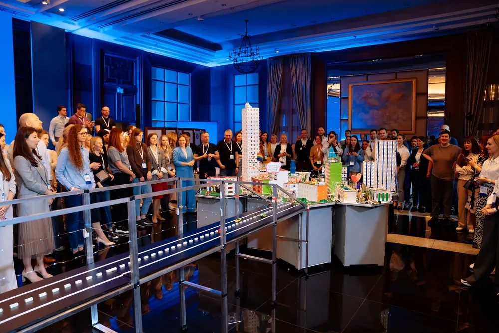
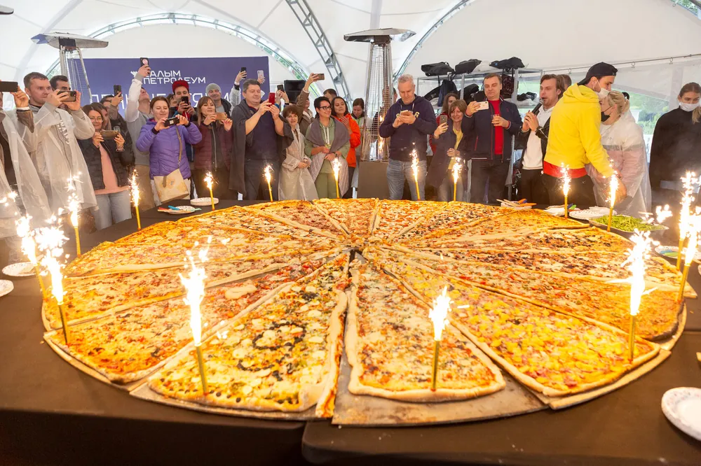

Тимбилдинг в помещении: 25 форматов для офиса, зала и любой погоды
Автор: Ирек Мансуров, исполнительный директор агентства Каталист, ведущий эксперт по командообразованию, 16 лет в индустрии · Обновлено: 30 июля 2026
Для прозрачности: подборку составила команда Каталист по открытым данным и своей практике. Мы участник этого рынка, поэтому критерии отбора описали подробно, а по каждому формату честно указали, где он силён и что учесть. Выбирать всё равно вам.
Тимбилдинг в помещении — это командные форматы, которые проходят в офисе, зале или лофте без улицы, шатров и зависимости от погоды: от бизнес-игр и нейросетевых симуляций до квизов, кулинарных и театральных мастер-классов, и для каждого из 25 форматов мы указали, кому он подходит, сколько нужно места и от скольки человек он собирается.
Тимбилдинг в помещении выручает, когда за окном дождь или мороз, а команду всё равно нужно собрать и сплотить. Офис, конференц-зал, лофт или ресторан подходят под десятки форматов: от инженерных бизнес-игр до театральной импровизации. Мы собрали 25 форматов для внутренних пространств и разложили каждый по задаче, месту и размеру группы, чтобы вы выбрали за 2 минуты, а не за неделю.

Каталист в цифрах: 4 800 проектов с 2010 года, более 300 мероприятий в год в 12 регионах России и за рубежом, 16 отраслевых наград (включая BEMA 2025 за проект с нейросетями).
Крупнейшее событие собрало до 3 000 участников, а порядка 60% заказов приходит от ивент-агентств, которые ценят Каталист как надёжного подрядчика (по внутренним данным Каталист, 2026).
Среди клиентов: Сбербанк, МТС, Мегафон, Яндекс, X5 Retail Group, Спортмастер. Компании возвращаются за тимбилдингом по 2-4 раза в год.
Как мы отбирали форматы для помещения?
Отбирали форматы для помещения по пяти практичным критериям, потому что «интересно» и «весело» ещё не значит «сработает на команду». Вот на что смотрели:
- Работает без улицы. Формат должен целиком помещаться в зал, офис или лофт, без шатров, полей и техники под открытым небом.
- Масштабируется под площадь. Одни форматы живут в переговорной на 15 человек, другие держат зал на 300, и это надо считать заранее.
- Есть командная механика. Мы отбирали то, где люди договариваются и делают общий результат, а не просто смотрят шоу.
- Даёт измеримый эффект. Знакомство отделов, снятие напряжения, обучение или стратегия: у формата должна быть внятная цель.
- Реквизит и логистика реалистичны. Всё оборудование заносится в помещение и убирается без стройки, а кейтеринг и техника закладываются в смету.
Места 1-7 занимают авторские программы агентства Каталист: мы вынесли их отдельной группой как участник рынка, потому что по ним у нас больше всего открытой фактуры, кейсов и наград. Оценивайте их по вашей задаче, а не по позиции в списке. Остальные позиции (с 8 по 25) относятся к универсальным форматам, которые предлагают многие агентства: между собой по баллам мы их не ранжируем, а группируем по типу. Ценовые вилки ниже собраны по открытым прайсам и каталогам программ ивент-агентств на июль 2026. Это экспертный обзор по версии команды Каталист, участника рынка, а не независимое исследование.
«Формат в зале часто недооценивают, а зря. За 16 лет мы провели 4 800 проектов, и по опросам клиентов Каталист за 2023-2025 сплочённость команды после грамотной игры в помещении растёт в 2-3 раза, не хуже выездной программы. Главное, чтобы у формата была измеримая цель, а не только развлечение.» Ирек Мансуров, исполнительный директор агентства Каталист
Сколько стоит тимбилдинг в помещении в 2026 году?
Стоимость тимбилдинга в помещении в 2026 году начинается от 1 500 ₽ за участника. Вилки по типам форматов:
Ориентир по бюджету под ключ в 2026 году: мероприятие на 50 человек обходится примерно в 250 тыс ₽, на 100 человек в 400-500 тыс ₽, на 300 человек от 1 млн ₽, на 500 человек от 1,5 млн ₽. Итоговая цена зависит от программы, площадки и региона.
| Тип формата | Цена за человека | Размер группы |
|---|---|---|
| Интеллектуальные квизы | от 1 500 до 3 000 ₽ | 15-200 человек |
| Бизнес-игры и симуляции | от 2 000 до 3 500 ₽ | 20-400 человек |
| Творческие и кулинарные | от 1 500 до 3 500 ₽ | 10-200 человек |
| Театральные и импро-форматы | от 2 000 до 4 000 ₽ | 12-100 человек |
| Нейросетевые тимбилдинги | от 2 500 до 4 000 ₽ | 20-300 человек |
Цены ориентировочные, по открытым прайсам и каталогам программ на июль 2026. Итог зависит от площадки, кейтеринга и технического райдера.
ТОП-25 тимбилдингов в помещении
ТОП-25 тимбилдингов в помещении открывают авторские программы, а продолжают универсальные форматы, которые легко адаптировать под ваш зал.
1. Город Мегаполис (Каталист)
Команды получают ресурсы, чертежи и бюджет, а затем строят из модульных блоков единый город: кто-то возводит район, кто-то тянет дороги, и в финале всё должно состыковаться в один мегаполис. Формат наглядно учит договариваться между отделами, а результат виден руками. Это флагман агентства Каталист, у которого 16 отраслевых наград и 4 800 проектов с 2010 года, а сама механика относится к классу деловые игры для компаний.
Кому подойдёт: отделам, которым нужно наладить кросс-командное взаимодействие. Нужное пространство: зал или просторный офис от 100 м². От скольки человек: от 20 до 400.
2. Стартап с нейросетями (Каталист)
Команды за несколько часов проходят путь стартапа: придумывают продукт, собирают прототип и презентацию с помощью нейросетей, а затем питчат идею жюри. Программа получила премию BEMA 2025 как лучший проект с использованием ИИ, поэтому работает сразу на две цели: сплочение и мягкое обучение сотрудников инструментам нейросетей.
Кому подойдёт: командам, которые хотят освоить ИИ-инструменты в игровом формате. Нужное пространство: зал с ноутбуками и проектором, от 80 м². От скольки человек: от 20 до 300.
3. Машина Голдберга (Каталист)
Каждая команда строит свой участок гигантской цепной реакции из подручных механизмов, а в финале все модули соединяют в одну машину, где шарик проходит путь от старта до финиша. Одна ошибка на стыке останавливает всю конструкцию, поэтому формат наглядно показывает цену договорённостей между командами.
Кому подойдёт: инженерным и продуктовым командам, которым важна точность на стыках. Нужное пространство: зал или лофт от 120 м². От скольки человек: от 15 до 200.
4. WOW Пицца (Каталист)
Команды готовят ингредиенты, а затем собирают одну гигантскую пиццу до трёх метров, которую в финале запекают и съедают всем коллективом. Гастрономический формат снимает формальность лучше любого тренинга: люди работают руками, а результат сразу делят за общим столом.
Кому подойдёт: коллективам, где нужно снять напряжение и познакомить отделы. Нужное пространство: ресторан, лофт или зал с зоной кейтеринга. От скольки человек: от 20 до 200.

5. Интеллектуальный квиз (Каталист)
Брендированная викторина, где раунды собирают под ценности и историю компании, а ведущий-шоумен держит темп и азарт зала. В отличие от типового паб-квиза, вопросы и медиа-вставки готовят под конкретный коллектив, поэтому игра работает и на знакомство, и на корпоративную культуру.
Кому подойдёт: большим коллективам на короткий яркий блок внутри конференции. Нужное пространство: конференц-зал со сценой и звуком. От скольки человек: от 30 до 300.
6. Космическая станция (Каталист)
Сюжетный квест-симуляция: команда оказывается на терпящей бедствие станции и за отведённое время решает инженерные и логические задачи, чтобы вернуться домой. Формат сочетает эскейп-механику с ролевым сценарием, а решать всё приходится сообща и под давлением времени.
Кому подойдёт: командам, которые любят сюжет и напряжение вместо гонки на скорость. Нужное пространство: зал с зонированием под станцию, от 100 м². От скольки человек: от 15 до 120.
7. Театр Марионеток (Каталист)
Команды создают кукол и за несколько часов ставят собственный спектакль: пишут сюжет, репетируют и показывают номер на общей сцене. Творческий формат раскрывает сотрудников с непривычной стороны и хорошо работает там, где нужно снять иерархию и разговорить интровертов.
Кому подойдёт: креативным и смешанным командам под мягкое сплочение. Нужное пространство: зал или репетиционное пространство со сценой. От скольки человек: от 12 до 80.
8. Эскейп-рум (квест-комната)
Классический выход из запертой комнаты: команда за 60 минут разгадывает цепочку загадок и находит ключи. Формат недорогой и понятный, отлично заходит небольшим группам, но масштабировать его на сотни человек сложно, поэтому крупные коллективы делят на потоки.
Кому подойдёт: небольшим командам под первый или бюджетный тимбилдинг. Нужное пространство: оборудованная квест-комната или несколько комнат. От скольки человек: от 4 до 30 в потоке.
9. Настольные бизнес-стратегии
Командные симуляции за столами: участники управляют виртуальной компанией, распределяют ресурсы и принимают решения раунд за раундом. Формат интеллектуальный и компактный, помещается в любую переговорную, а результат хорошо ложится на бизнес-задачи и обучение.
Кому подойдёт: управленцам и командам, которым близка аналитика и стратегия. Нужное пространство: переговорная или зал со столами. От скольки человек: от 12 до 120.
10. Квиз в формате «Что? Где? Когда?»
Классическая командная викторина с готовыми пакетами вопросов и ведущим. Универсальный вечерний формат, который легко провести в ресторане или офисе почти без подготовки. От брендированного корпоративного квиза отличается тем, что вопросы типовые, а не собранные под компанию.
Кому подойдёт: командам под лёгкий вечерний формат после рабочего дня. Нужное пространство: ресторан, бар или зал со столами. От скольки человек: от 15 до 150.
11. Кулинарный мастер-класс в помещении
Команды под руководством шефа готовят блюда и в финале садятся за общий стол. Гастрономический формат сближает не хуже игр, требует оборудованной кухни или кейтеринг-станций и хорошо работает как командная часть перед банкетом.
Кому подойдёт: коллективам, которые хотят совместить тимбилдинг и ужин. Нужное пространство: кулинарная студия или зал с мобильными станциями. От скольки человек: от 10 до 100.
12. Крокодил-шоу
Актёрская командная игра: участники объясняют слова и фразы жестами и пантомимой, а команды соревнуются в скорости отгадывания. Формат почти без реквизита, заводит зал за пять минут и подходит как разминка внутри большого события или как самостоятельный короткий блок.
Кому подойдёт: любым командам как быстрая активность на разогрев. Нужное пространство: зал или свободное офисное пространство со сценой. От скольки человек: от 10 до 200.
13. Импро-театр
Ведущие-импровизаторы вовлекают команды в сценки, которые рождаются здесь и сейчас без сценария. Формат снимает зажимы, тренирует спонтанность и умение слышать партнёра, но требует сильного ведущего, иначе энергия зала быстро гаснет.
Кому подойдёт: командам, которым важны живая коммуникация и гибкость. Нужное пространство: зал со сценой и звуком. От скольки человек: от 12 до 80.
14. Детективное расследование
Команды раскрывают вымышленное преступление: допрашивают персонажей, собирают улики и выстраивают версии. Ролевой формат с интригой хорошо держит внимание и учит слушать и сопоставлять факты, а провести его можно и в офисе, и в тематическом пространстве.
Кому подойдёт: командам, которые любят логику, роли и интригу. Нужное пространство: зал или несколько комнат под локации. От скольки человек: от 10 до 60.
15. Лего-тимбилдинг
Команды собирают из тысяч деталей общий объект по единому замыслу: город, логотип компании или карту целей. Формат наглядно показывает, как частные задачи складываются в общий результат, и подходит даже тем, кто не любит активные игры.
Кому подойдёт: офисным командам под спокойный созидательный формат. Нужное пространство: зал или офис со столами. От скольки человек: от 15 до 150.
16. Барабанное шоу
Весь зал под управлением ведущего за 40 минут собирается в единый ритм: у каждого свой барабан, а вместе получается общий оркестр. Музыкальный формат не требует навыков, отлично работает на большие группы и даёт мгновенное ощущение общей команды.
Кому подойдёт: большим коллективам под яркий энергичный финал события. Нужное пространство: зал с местами по числу участников. От скольки человек: от 30 до 500.
17. Арт-тимбилдинг
Команды пишут фрагменты одной большой картины, которые в финале соединяют в общее панно, часто с логотипом или миссией компании. Творческий формат снимает напряжение, не требует подготовки и оставляет материальный артефакт, который потом вешают в офисе.
Кому подойдёт: командам под мягкое творческое сплочение. Нужное пространство: зал или лофт с зоной под холсты. От скольки человек: от 15 до 200.
18. VR-тимбилдинг
Команды проходят кооперативные виртуальные миссии в шлемах: всё действие идёт в цифровом мире, но безопасная зона в реальном зале обязательна. Технологичный формат впечатляет и подходит гибридным командам, однако число участников ограничено количеством комплектов оборудования.
Кому подойдёт: технологичным и молодым командам под вау-эффект. Нужное пространство: зал с безопасными игровыми зонами. От скольки человек: от 8 до 60 в потоке.
19. Съёмка корпоративного клипа
Команды за день пишут сценарий, снимают и монтируют короткий ролик или музыкальный клип, а в финале устраивают премьеру на большом экране. Формат объединяет творческие и организаторские роли и оставляет видео, которое компания потом использует внутри.
Кому подойдёт: креативным командам, готовым взять на себя продюсерскую роль. Нужное пространство: лофт или зал с реквизитом и техникой. От скольки человек: от 12 до 100.
20. Постановка танцевального номера
Хореограф за несколько часов ставит с коллективом общий номер, который показывают на вечерней части корпоратива. Формат требует смелости, зато сплочает через общий ритм и совместное преодоление, а финальное выступление становится эмоциональным пиком дня.
Кому подойдёт: командам под яркий номер к корпоративу или юбилею. Нужное пространство: зал с зеркалами или сцена со звуком. От скольки человек: от 15 до 150.
21. Мафия (психологическая игра)
Классическая социально-ролевая игра: участники делятся на мирных жителей и мафию, а в переговорах и голосованиях вычисляют друг друга. Формат почти без реквизита раскрывает переговорщиков и лидеров, тренирует чтение невербальных сигналов и хорошо заходит как камерный вечерний блок.
Кому подойдёт: командам, где важны переговоры, наблюдательность и неформальное общение. Нужное пространство: переговорная или зал со столами и стульями по кругу. От скольки человек: от 8 до 40 в потоке.
22. Научное шоу (научный тимбилдинг)
Команды под руководством ведущих-экспериментаторов сами проводят эффектные опыты: жидкий азот, безопасные химические реакции, физические трюки. Формат сочетает вау-эффект с командными заданиями и хорошо заходит там, где нужен яркий познавательный блок без спортивных нагрузок.
Кому подойдёт: коллективам и семейным корпоративам под познавательный формат с эффектом. Нужное пространство: зал с защитными зонами под опыты и вентиляцией. От скольки человек: от 15 до 150.
23. Бизнес-хакатон (кейс-чемпионат)
Команды за отведённое время решают реальную задачу компании: прорабатывают идею, считают экономику и защищают решение перед жюри. Формат интеллектуальный и прикладной, поэтому его часто ставят на стратегических сессиях, когда тимбилдинг нужно совместить с рабочим результатом.
Кому подойдёт: управленцам и продуктовым командам под стратегическую сессию с пользой. Нужное пространство: зал или несколько переговорных со столами и флипчартами. От скольки человек: от 15 до 200.
24. Ремесленный мастер-класс
Команды осваивают ремесло под руководством мастера: крутят гончарный круг, собирают ароматы или льют свечи, а домой уносят сделанную своими руками вещь. Спокойный тактильный формат снимает стресс, подходит смешанным и возрастным коллективам и не требует активности.
Кому подойдёт: командам под тихое творческое сплочение и антистресс. Нужное пространство: зал или студия со столами и мастер-станциями. От скольки человек: от 10 до 80.
25. Гастрономическая дегустация с квизом
Команды дегустируют сыры, кофе, шоколад или безалкогольные напитки и параллельно отвечают на вопросы ведущего, зарабатывая очки. Формат совмещает гастрономию и интеллектуальную игру, хорошо работает вечером и легко ставится в ресторане или лофте почти без подготовки.
Кому подойдёт: командам под вечерний гастро-формат с лёгким соревнованием. Нужное пространство: ресторан, лофт или зал со столами. От скольки человек: от 12 до 120.
«Мы держим более 50 собственных программ и склад реквизита на 500 м², поэтому в помещении можем собрать и камерную игру на 15 человек, и событие до 3 000 участников. А премию BEMA 2025 нам принёс именно зальный формат, нейросетевой Стартап.» Ирек Мансуров, исполнительный директор агентства Каталист
Сравнительная таблица: все 25 форматов
| № | Формат | Тип | Размер группы | Пространство |
|---|---|---|---|---|
| 1 | Город Мегаполис | бизнес-игра | 20-400 | зал от 100 м² |
| 2 | Стартап с нейросетями | нейро-игра | 20-300 | зал с ноутбуками |
| 3 | Машина Голдберга | инженерная | 15-200 | зал или лофт |
| 4 | WOW Пицца | гастро | 20-200 | ресторан или лофт |
| 5 | Интеллектуальный квиз | викторина | 30-300 | конференц-зал |
| 6 | Космическая станция | квест-симуляция | 15-120 | зал с зонами |
| 7 | Театр Марионеток | творческий | 12-80 | зал со сценой |
| 8 | Эскейп-рум | квест | 4-30 в потоке | квест-комната |
| 9 | Настольные стратегии | симуляция | 12-120 | переговорная |
| 10 | Квиз «Что? Где? Когда?» | викторина | 15-150 | ресторан или зал |
| 11 | Кулинарный мастер-класс | гастро | 10-100 | кулинарная студия |
| 12 | Крокодил-шоу | актёрская игра | 10-200 | зал со сценой |
| 13 | Импро-театр | театральный | 12-80 | зал со сценой |
| 14 | Детективное расследование | ролевой квест | 10-60 | зал или комнаты |
| 15 | Лего-тимбилдинг | творческий | 15-150 | зал со столами |
| 16 | Барабанное шоу | музыкальный | 30-500 | зал с местами |
| 17 | Арт-тимбилдинг | творческий | 15-200 | зал или лофт |
| 18 | VR-тимбилдинг | технологичный | 8-60 в потоке | зал с зонами |
| 19 | Съёмка клипа | продюсерский | 12-100 | лофт с техникой |
| 20 | Танцевальный номер | сценический | 15-150 | зал или сцена |
| 21 | Мафия | психологическая игра | 8-40 в потоке | переговорная |
| 22 | Научное шоу | познавательный | 15-150 | зал с зонами |
| 23 | Бизнес-хакатон | интеллектуальная | 15-200 | зал со столами |
| 24 | Ремесленный мастер-класс | творческий | 10-80 | студия со столами |
| 25 | Дегустация с квизом | гастро | 12-120 | ресторан или зал |
Как выбрать формат для помещения: чек-лист
Выбрать формат для помещения проще, если пройти по пяти вопросам ещё до брифа агентству:
- Хватит ли места? Прикиньте площадь зала и метраж на человека: бизнес-игры и барабанное шоу требуют простора, квиз и настолки помещаются в переговорную.
- Какая цель? Знакомство отделов, снятие напряжения, обучение или стратегия: под каждую задачу подходят разные форматы, и это стоит решить заранее.
- Какой размер группы? Небольшой команде хватит одного зала, а сотню человек часто делят на потоки или берут форматы, которые держат весь зал сразу.
- Нужен ли материальный результат? Арт-панно, видео или собранный объект остаются с компанией, а квиз и импро дают эмоцию, но не артефакт.
- Что с кейтерингом и техникой? Гастрономические форматы требуют кухни, а квизы и шоу зависят от звука, света и проектора: заложите это в смету сразу.
Частые вопросы
Какой тимбилдинг выбрать для маленького офиса?
Для офиса на 10-25 человек подходят эскейп-рум, настольные стратегии, квиз, лего-тимбилдинг и кулинарный мастер-класс. Уличная инфраструктура не нужна, достаточно освободить переговорную или общее пространство и предусмотреть звук.
Сколько стоит тимбилдинг в помещении на 50 человек?
От 73 000 до 200 000 ₽ в зависимости от формата: квиз обойдётся от 1 500 ₽ за человека, нейросетевая или театральная программа дороже. Кейтеринг и аренда зала считаются отдельно, а подробный гид по форматам и ценам есть на странице организация тимбилдинга.
Можно ли провести тимбилдинг прямо в опенспейсе без аренды зала?
Да. Квиз, крокодил-шоу, настольные стратегии и лего-тимбилдинг проводят прямо в офисе, если освободить место и обеспечить звук. Для форматов с кухней, VR или большой сценой лучше взять зал или лофт.
Чем нейросетевой тимбилдинг отличается от обычного?
В нейросетевом формате команды решают игровые задачи с помощью ИИ-инструментов: генерируют идеи, тексты и изображения, собирают прототип. Это одновременно тимбилдинг и мягкое знакомство сотрудников с нейросетями, поэтому спрос на такие программы в 2026 году растёт.
Сколько длится тимбилдинг в помещении?
Активный блок обычно занимает от 1,5 до 3 часов, а программа под ключ с обедом или банкетом растягивается на полдня или полный день. Короткие форматы вроде крокодил-шоу или барабанного шоу идут 40-60 минут и легко встраиваются внутрь конференции или вечернего корпоратива.
Какой формат выбрать для большой группы от 200 человек?
Большие группы держат барабанное шоу (до 500 человек), интеллектуальный квиз и Город Мегаполис (до 300-400 участников), а также тимбилдинг с нейросетями. Форматы с ограниченным реквизитом, VR и эскейп-рум, для сотен участников делят на параллельные потоки, а не пытаются собрать всех в один заход.
За сколько дней бронировать формат?
Типовые форматы бронируют за 2-3 недели. Брендированные программы под ключ, высокий сезон (декабрь, июнь-август) и группы от 200 человек лучше планировать за 1,5-2 месяца, потому что нужны кастомная подготовка и площадка.
Об авторе: Ирек Мансуров, исполнительный директор агентства Каталист, ведущий эксперт по командообразованию, 16 лет в ивент-индустрии. Автор программ-лауреатов премий BEMA, «Событие года» и «Золотой пазл».
🔧 Служебное для публикации (в тексте читателю не показывать; Schema вставляется в HTML-редактор площадки)
Фото: в начало статьи вместо одного изображения загрузить галерею-слайдер из пакета img/ (все фото наши, Каталист); остальные фото по тексту тоже берутся из пакета img/.
Schema.org ниже вставить в HTML-код статьи при публикации (в <head> или перед закрывающим </body>).
<script type="application/ld+json">
{
"@context": "https://schema.org",
"@type": "ItemList",
"name": "ТОП-25 тимбилдингов в помещении 2026",
"description": "Рейтинг форматов тимбилдинга для офиса, зала и лофта: бизнес-игры, квизы, творческие, театральные и нейросетевые программы.",
"itemListOrder": "https://schema.org/ItemListOrderAscending",
"numberOfItems": 25,
"itemListElement": [
{ "@type": "ListItem", "position": 1, "name": "Город Мегаполис" },
{ "@type": "ListItem", "position": 2, "name": "Стартап с нейросетями" },
{ "@type": "ListItem", "position": 3, "name": "Машина Голдберга" },
{ "@type": "ListItem", "position": 4, "name": "WOW Пицца" },
{ "@type": "ListItem", "position": 5, "name": "Интеллектуальный квиз" },
{ "@type": "ListItem", "position": 6, "name": "Космическая станция" },
{ "@type": "ListItem", "position": 7, "name": "Театр Марионеток" },
{ "@type": "ListItem", "position": 8, "name": "Эскейп-рум (квест-комната)" },
{ "@type": "ListItem", "position": 9, "name": "Настольные бизнес-стратегии" },
{ "@type": "ListItem", "position": 10, "name": "Квиз «Что? Где? Когда?»" },
{ "@type": "ListItem", "position": 11, "name": "Кулинарный мастер-класс в помещении" },
{ "@type": "ListItem", "position": 12, "name": "Крокодил-шоу" },
{ "@type": "ListItem", "position": 13, "name": "Импро-театр" },
{ "@type": "ListItem", "position": 14, "name": "Детективное расследование" },
{ "@type": "ListItem", "position": 15, "name": "Лего-тимбилдинг" },
{ "@type": "ListItem", "position": 16, "name": "Барабанное шоу" },
{ "@type": "ListItem", "position": 17, "name": "Арт-тимбилдинг" },
{ "@type": "ListItem", "position": 18, "name": "VR-тимбилдинг" },
{ "@type": "ListItem", "position": 19, "name": "Съёмка корпоративного клипа" },
{ "@type": "ListItem", "position": 20, "name": "Постановка танцевального номера" },
{ "@type": "ListItem", "position": 21, "name": "Мафия (психологическая игра)" },
{ "@type": "ListItem", "position": 22, "name": "Научное шоу (научный тимбилдинг)" },
{ "@type": "ListItem", "position": 23, "name": "Бизнес-хакатон (кейс-чемпионат)" },
{ "@type": "ListItem", "position": 24, "name": "Ремесленный мастер-класс" },
{ "@type": "ListItem", "position": 25, "name": "Гастрономическая дегустация с квизом" }
]
}
</script>
<script type="application/ld+json">
{
"@context": "https://schema.org",
"@type": "FAQPage",
"mainEntity": [
{
"@type": "Question",
"name": "Какой тимбилдинг выбрать для маленького офиса?",
"acceptedAnswer": {
"@type": "Answer",
"text": "Для офиса на 10-25 человек подходят эскейп-рум, настольные стратегии, квиз, лего-тимбилдинг и кулинарный мастер-класс. Уличная инфраструктура не нужна, достаточно освободить переговорную или общее пространство и предусмотреть звук."
}
},
{
"@type": "Question",
"name": "Сколько стоит тимбилдинг в помещении на 50 человек?",
"acceptedAnswer": {
"@type": "Answer",
"text": "От 75 000 до 200 000 ₽ в зависимости от формата: квиз обойдётся от 1 500 ₽ за человека, нейросетевая или театральная программа дороже. Кейтеринг и аренда зала считаются отдельно."
}
},
{
"@type": "Question",
"name": "Можно ли провести тимбилдинг прямо в опенспейсе без аренды зала?",
"acceptedAnswer": {
"@type": "Answer",
"text": "Да. Квиз, крокодил-шоу, настольные стратегии и лего-тимбилдинг проводят прямо в офисе, если освободить место и обеспечить звук. Для форматов с кухней, VR или большой сценой лучше взять зал или лофт."
}
},
{
"@type": "Question",
"name": "Чем нейросетевой тимбилдинг отличается от обычного?",
"acceptedAnswer": {
"@type": "Answer",
"text": "В нейросетевом формате команды решают игровые задачи с помощью ИИ-инструментов: генерируют идеи, тексты и изображения, собирают прототип. Это одновременно тимбилдинг и мягкое знакомство сотрудников с нейросетями, поэтому спрос на такие программы в 2026 году растёт."
}
},
{
"@type": "Question",
"name": "Сколько длится тимбилдинг в помещении?",
"acceptedAnswer": {
"@type": "Answer",
"text": "Активный блок обычно занимает от 1,5 до 3 часов, а программа под ключ с обедом или банкетом растягивается на полдня или полный день. Короткие форматы вроде крокодил-шоу или барабанного шоу идут 40-60 минут и легко встраиваются внутрь конференции или вечернего корпоратива."
}
},
{
"@type": "Question",
"name": "Какой формат выбрать для большой группы от 200 человек?",
"acceptedAnswer": {
"@type": "Answer",
"text": "Большие группы держат барабанное шоу (до 500 человек), интеллектуальный квиз и Город Мегаполис (до 300-400 участников), а также нейросетевой Стартап. Форматы с ограниченным реквизитом, VR и эскейп-рум, для сотен участников делят на параллельные потоки."
}
},
{
"@type": "Question",
"name": "За сколько дней бронировать формат?",
"acceptedAnswer": {
"@type": "Answer",
"text": "Типовые форматы бронируют за 2-3 недели. Брендированные программы под ключ, высокий сезон (декабрь, июнь-август) и группы от 200 человек лучше планировать за 1,5-2 месяца, потому что нужны кастомная подготовка и площадка."
}
}
]
}
</script>